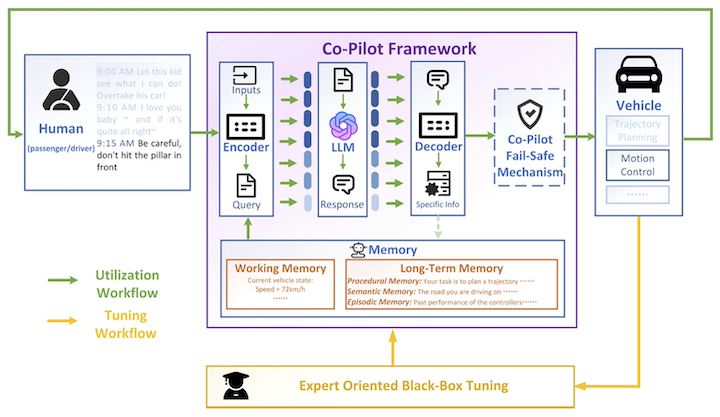
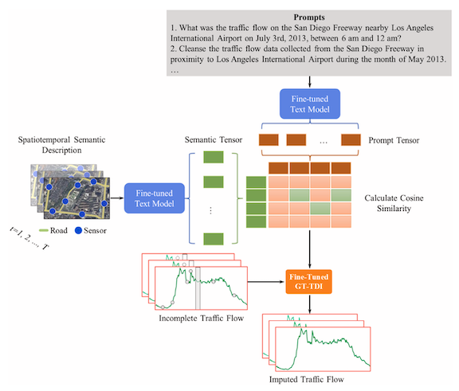
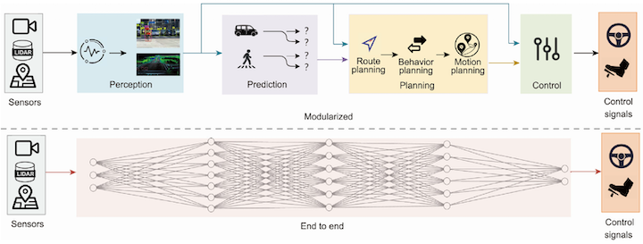

Large Language Model: Powering Transportation Studies
Overview
Large language models represent one of the latest and most powerful advances in artificial intelligence, and they are reshaping how people communicate, reason, create, and make decisions across society. Transportation research is undergoing the same transformation. From the earliest stage of widespread LLM adoption, our team began exploring how language-based reasoning, semantic understanding, memory, agency, and natural-language interaction could enable frontier applications across traffic systems, travel behavior, and autonomous driving.
Our early and continuing explorations span four directions:
- Published as a Correspondence in Nature, this work examined the broader societal implications of generative AI and highlighted the risk that AI writing tools may suppress linguistic and cultural diversity, particularly by encouraging scholars from low-income countries to erase their own voices in pursuit of standardized academic expression[1].
- As one of the first studies to explore LLMs in vehicles, we introduced ChatGPT as a vehicle co-pilot and developed an early framework that translates natural-language intentions into driving assistance for path tracking and trajectory planning without fine-tuning the underlying LLM[2].
- We first highlighted the importance of prompts for traffic prediction, leveraging LLMs to bring semantic understanding into large-scale traffic data imputation[3].
- We systematically reviewed how LLMs can power autonomous driving across modular and end-to-end systems, covering their roles in perception, reasoning, decision-making, human–vehicle interaction, long-tail scenarios, and the safety and security challenges that remain[4].
Publications
[1]AI Writing Tools Could Lead Scholars from Low-Income Countries to Erase Their Own Voices

[2]ChatGPT as Your Vehicle Co-Pilot: An Initial Attempt

[3]Semantic Understanding and Prompt Engineering for Large-Scale Traffic Data Imputation

[4]A Survey on Large Language Model-Powered Autonomous Driving